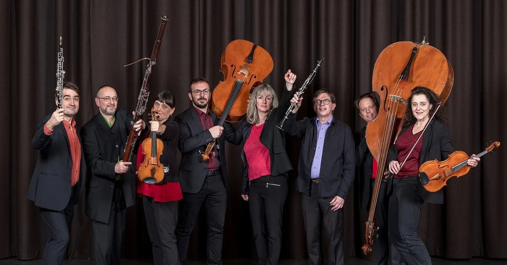
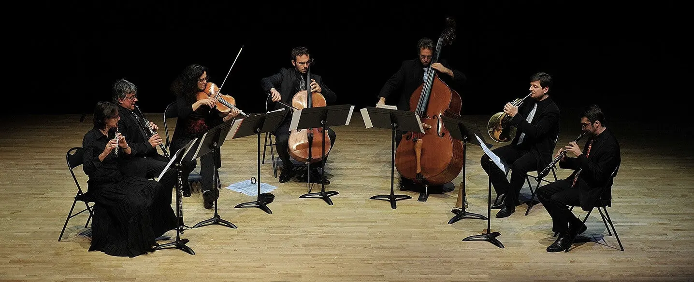

Tetraktys · L’association
Une aventure musicale
née en 1988
Un ensemble à géométrie variable, des musiciens passionnés et une conviction : la musique de chambre se partage.
Présentation
L’ensemble de référence en Bourgogne Franche-Comté
Ensemble de musique de chambre professionnel, basé à Besançon et rayonnant en Bourgogne Franche-Comté et au-delà, Tetraktys poursuit depuis sa création en 1988 son objectif : faire connaître et diffuser le grand répertoire, du XVIIIᵉ au XXIᵉ siècle.
Son effectif varie selon les programmes — quatuor à cordes, trio d’anches, quintette à vent, formations avec piano ou guitare — et réunit des musiciens professionnels, solistes d’orchestre et professeurs de conservatoire.
Au fil des années : des centaines de concerts, des tournées en Chine, en Afrique et à travers l’Europe, deux festivals en région, de nombreuses créations et des partenariats tous azimuts.

Histoire
Quelques jalons
Naissance de Tetraktys
Création de l’ensemble de musique de chambre à Besançon.
Premier festival de musique de chambre
Début d’une aventure estivale qui trouve sa maison au Prieuré de Marast, en Haute-Saône : « 2007–2026 : 20 ans de festival avec vous ! »
Créations et collaborations
Un CD consacré à la musique anglaise (« British and so on »), une création avec la compagnie Cirque Autour sur le ballet Trapèze de Prokofiev, un programme Debussy au Festival International de Besançon, une création pour le Bicentenaire Courbet.
Une Nuit, un festival, un lien constant avec les publics
La Nuit de la musique de chambre, avec le Conservatoire du Grand Besançon et le Rectorat, a connu sa 8ᵉ édition en 2026 ; le 20ᵉ festival a réuni solistes invités et musiciens de l’ensemble. Isabelle Druet, Jean-François Verdier, Nicolas Dautricourt ou Fabrice Pierre se sont récemment produits avec Tetraktys.
Le sens du nom
Dix points, quatre rangées, une harmonie
La tétraktys est le triangle sacré des pythagoriciens : 1 + 2 + 3 + 4 = 10. Ils y voyaient le point, la ligne, la surface et le volume — et, surtout, les rapports qui fondent la musique. Touchez les points, écoutez les intervalles.
Touchez un point
Chaque rangée porte un nombre ; entre les rangées naissent les intervalles de la musique.
Le son ne se déclenche qu’au clic sur un bouton.
Valeurs
Ce qui nous guide
Exigence
Des musiciens professionnels, solistes d’orchestre et professeurs de conservatoire, au service du grand répertoire.
Partage
« Le plaisir du partage » : concerts en libre participation, tarifs accessibles à tous, gratuité pour les moins de 12 ans.
Transmission
Présentations d’instruments, concerts scolaires, concerts d’étudiants du conservatoire, formations pour enseignants.
Curiosité
Créations, contes musicaux, rencontres entre les arts : « écouter autrement, rêver ensemble ».
Les musiciens
Une géométrie variable
Selon les programmes, les musiciens de Tetraktys se retrouvent en duo, en trio, en quatuor ou en formation élargie. Parmi celles et ceux que le public a pu entendre ces dernières saisons :
- Isabelle Debever-Distelviolon
- Anna Simereyviolon
- Dominique Mitonalto
- Georges Denoixvioloncelle
- Baptiste Massoncontrebasse, récitant
- Lisa Raphelflûte
- Fabrice Ferezhautbois, cor anglais
- Fortunato Nebbiaclarinette
- Damien Rosebasson
- Sylvain Guilloncor
- René Lagos-Diazguitare
- Jean-Michel Distelpiano

Le bureau
Qui contacter
Ils nous accompagnent
Grand Besançon Métropole, le Conservatoire du Grand Besançon Métropole, le Rectorat de Besançon, les Amis du Prieuré de Marast, le Festival des Chapelles Royans-Vercors, la compagnie Cirque Autour… et vous, publics et adhérents fidèles.